TỰ ĐỘNG ĐÓNG MỞ: Cảm ứng động khoảng 300mm PREWASH: Xả tráng lòng bầu trước khi sử dụng, cho trải nghiệm vệ sinh đỉnh cao HAI ĐÂU PHUN RỬA CHUYÊN BIỆT: Đầu vòi tự động vệ sinh trước và sau khi sử dụng KHÁNG KHUẨN: Công nghệ kháng khuẩn Anti-bacterial sử dụng trên đầu phun và bệ ngồi DIỆT KHUẨN LÒNG BẦU: Công nghệ Plasmacluster diệt vi khuẩn mọi ngóc ngách trong lòng bầu TỰ ĐỘNG XẢ NƯỚC: Tự động xả sau 6s hoặc bằng bảng điều khiển PHUN MASSAGE: Chế độ phun Massage thư giãn SẤY KHÔ: Sấy khô sạch sẽ, an toàn với 3 mức sấy SƯỞI ẤM BỆ NGỒI: Bệ ngồi ấm áp thoải mái thư giãn với 6 mức nhiệt KHỬ MÙI LÒNG BẦU: Không lo mùi hôi khó chịu khi đi vệ sinh với tính năng quạt ngăn mùi ÁNH SÁNG LÒNG BẦU: Ánh sáng dịu nhẹ vào ban đêm để định hướng cho người sử dụng
Bồn cầu điện tử AC-819VN (SARAS Auto Open)
Bàn cầu thông minh thương hiệu INAX.
Đã cập nhật danh sách yêu thích.
DANH MỤC: Bàn cầu thông minh
MÃ SẢN PHẨM: AC-819VN (SARAS Auto Open)
DEPTH: 710mm
HEIGHT: 472mm
WIDTH: 385mm
TỰ ĐỘNG ĐÓNG MỞ: Cảm ứng động khoảng 300mm PREWASH: Xả tráng lòng bầu trước khi sử dụng, cho trải nghiệm vệ sinh đỉnh cao HAI ĐÂU PHUN RỬA CHUYÊN BIỆT: Đầu vòi tự động vệ sinh trước và sau khi sử dụng KHÁNG KHUẨN: Công nghệ kháng khuẩn Anti-bacterial sử dụng trên đầu phun và bệ ngồi DIỆT KHUẨN LÒNG BẦU: Công nghệ Plasmacluster diệt vi khuẩn mọi ngóc ngách trong lòng bầu TỰ ĐỘNG XẢ NƯỚC: Tự động xả sau 6s hoặc bằng bảng điều khiển PHUN MASSAGE: Chế độ phun Massage thư giãn SẤY KHÔ: Sấy khô sạch sẽ, an toàn với 3 mức sấy SƯỞI ẤM BỆ NGỒI: Bệ ngồi ấm áp thoải mái thư giãn với 6 mức nhiệt KHỬ MÙI LÒNG BẦU: Không lo mùi hôi khó chịu khi đi vệ sinh với tính năng quạt ngăn mùi ÁNH SÁNG LÒNG BẦU: Ánh sáng dịu nhẹ vào ban đêm để định hướng cho người sử dụng
DANH MỤC: Bàn cầu thông minh
MÃ SẢN PHẨM: AC-819VN (SARAS Auto Open)
DEPTH: 710mm
HEIGHT: 472mm
WIDTH: 385mm